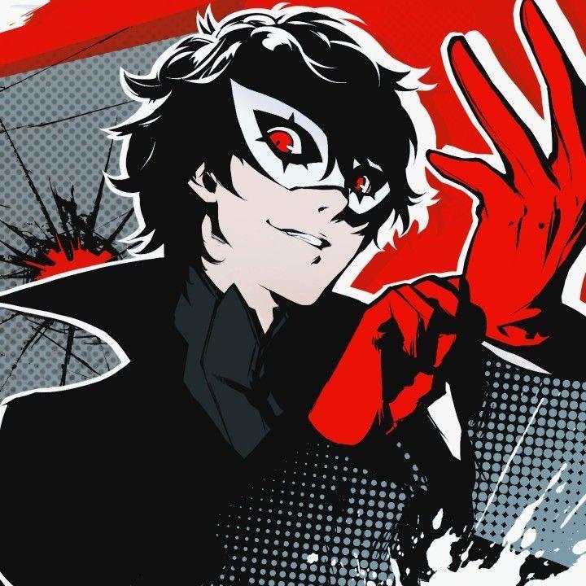

About Joker
The protagonist of Persona 5, canonically named Ren Amamiya (which appeared in several spin-off media before becoming his default name in the 2022 re-release of Persona 5 Royal), is a second-year transfer student at Shujin Academy, being placed there to continue his academics due to his ongoing probation resulting from being falsely framed for assault.
At the beginning of the game, he has sacrificed himself for the sake of protecting another person, having lost all power or influence in the world as a consequence. However, beneath his quiet demeanor is a strong-willed Wild Card leading the Phantom Thieves and capable of exploiting the Metaverse to affect reality. To his teammates, his code name is Joker, and to the residents of the Velvet Room he is known as the Trickster. The protagonist is the leader of the rebellious Phantom Thieves of Hearts, a group which aims to change society by touching the hearts of people and performing illegal heists.
"...You are held captive. A prisoner of fate to a future that has been sealed in advance. This is truly an unjust game... Your chances of winning are almost none. But if my voice is reaching you, there may yet be a possibility open to you... ...I beg you. Please overcome this game... and save the world... The key to victory lies within the memories of your bonds—the truth that you and your friends grasped. It all began that day... when the game was started half a year ago... For the sake of your world's future... as well as your own... you must remember..."
Joker
Joker's Characteristics
- He's the leader of the Phantom Thieves
- He's a Japanese student of Shujin Academy
- He's arcana is the Fool